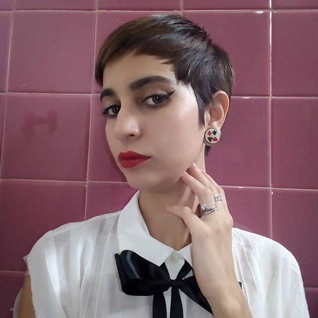

Elisa Libânio é Cientista Social de formação,brasileira
e residente em Belo Horizonte- Minas Gerais .Amante da cozinha e principalmente da confeitaria,
divide seu tempo entre os estudos na Trybe, a costura e seus gatinhos.